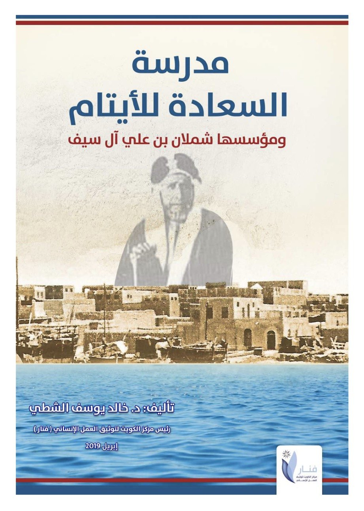
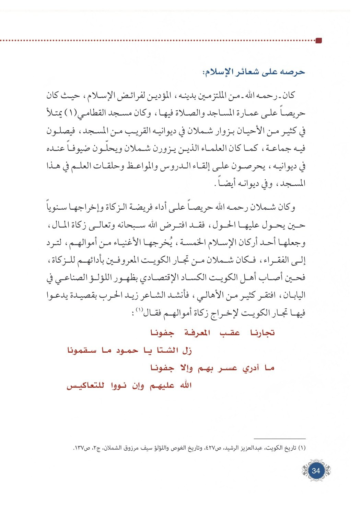

Published April 2019 · Book pages, by Dr Khalid Yousef Al-Shatti, Kuwait Centre for Documenting Humanitarian Work (Fanar), April 2019
Madrasat Al-Saada lil-Aytam: Masjid Al-Qatami beside the diwaniya of Shamlan bin Ali Al-Saif
What it is
A biography of the merchant Shamlan bin Ali Al-Saif. Page 34 says Masjid Al-Qatami was often filled with Shamlan’s visitors from his diwaniya near the mosque, who prayed there together, and that visiting scholars gave lessons and sermons in the mosque. Page 37 adds that he had young men of his family taught religious sciences by the visiting scholars in «Masjid Al-Qatami, next to the diwan».
Why it matters
Describes Masjid Al-Qatami as a place of prayer and learning in the Sharq quarter.
Page copies


Notes
Only the first pages are shown here. Family members who sign in can see all 3 pages.
Others named
Sources
Dr Khalid Yousef Al-Shatti, Madrasat Al-Saada lil-Aytam wa-Mu’assisuha Shamlan bin Ali Al-Saif, Fanar, Kuwait, 2019, pages 34 and 37
How this text was made: Photographed from the printed pages.
Open in the interactive site